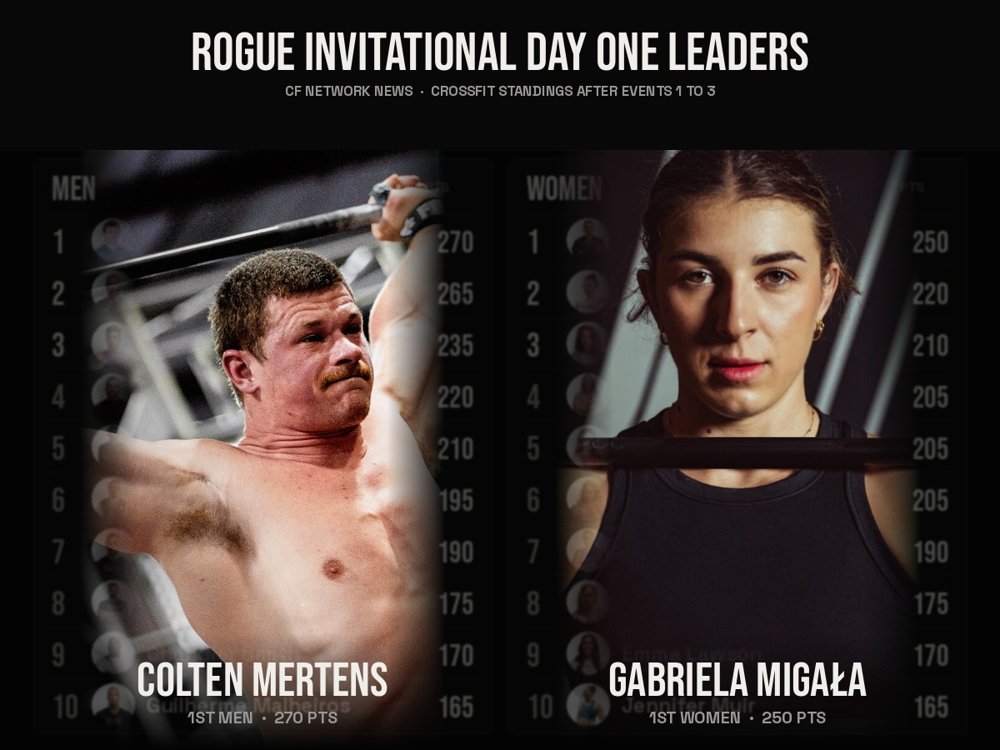

Rogue Invitational Day One: Mertens and Migała Lead as Horvath and Adler Sit 12th
Day one of the 2026 Rogue Invitational in Aberdeen, Scotland, is in the books, and it delivered surprises from the very first event. Colten Mertens leads the men with 270 points, and Gabriela Migała leads the women with 250. Both defending champions, Jeffrey Adler and Laura Horvath, ended the day in 12th place.
Event 1: River Dee
The opener was seven rounds of 11 calorie ski, 7 wall walks, 11 calorie ski and 7 devil's presses. James Sprague won the men's heat in 18:29.07, with Dallin Pepper second and Harry Lightfoot third. Lucy Campbell took the women's win in 18:50.15, ahead of Siria Meha and Migała.
The biggest story of the event was at the other end of the leaderboard. Horvath, the previous champion, finished dead last in 20th in 23:51.52 and scored zero points. Ricky Garard also had a bad start, placing 17th in 22:38.06. Fans in the livestream chat said Garard was hit with multiple no reps on the wall walks, though that was not shown on the broadcast.
Event 2: Single Malt
Single Malt was a descending ladder of heavy back squats with sprints in between. The men went 10, 8, 6, 4 and 2 reps from 315 up to 405 pounds, and the women climbed from 225 to 285. Mertens came in favored to win the second and third events, and he did just that. He made easy work of the back squats and won in 4:45.97, more than 17 seconds ahead of Bayley Martin in second. Jay Crouch was third.
Horvath bounced right back. One event after finishing last, she won the women's heat in 5:35.37, ahead of Kyra Milligan and Campbell. Danielle Brandon took a different approach. Because there was no minimum work requirement, she chose not to complete any reps on Event 2 and take a zero. She was scored at the cap plus 40, last in the event.
Event 3: The Viking
Day one closed with 60 seconds of max reps on the Viking press. Mertens went 23 reps unbroken, then 7 more. On the broadcast it appeared he locked out an eighth rep of that set, which would have been his 31st press, right at the buzzer, but it was not counted. He still won the event with 30 reps, which put him in the lead overall for day one. Garard tied Mertens at 30 reps but was second on the tiebreak, a strong finish to a tough day. Tudor Magda was third with 29.
Dani Speegle won the women's event with an impressive 33 reps, going 7, 7, 6, 4, 4 and 5 all in the 60 seconds. Alex Gazan was second with 29, and Aimee Cringle was third, also with 29. Horvath finished outside the top 10 in 11th and ended her day in 12th overall.
Appeal Ruling on Event 3
There were some appeals on Event 3, including one about James Sprague and Bayley Martin. The two men tied at 23 reps. The tiebreak was most reps completed by the 30 second mark, and they tied that too with 15 each. Both athletes were awarded the same points and placement, tied for 10th with 55 points each.
Women: Migała Puts Her Eggs in One Basket
Migała had the best rounded day of any woman, finishing third, fourth and sixth to take the lead. Her return to competition comes after she qualified for the CrossFit Games but decided to sit it out to focus on training for the Rogue Invitational instead. She has put all her eggs in this basket, and so far she looks very consistent.
Campbell is not going down without a fight. She sits second with 220 points after winning Event 1 and taking third on Event 2. There are also many athletes within striking distance of the top five, which could make it difficult. Gazan is third with 210, and Milligan, Olivia Kerstetter and Emma Tall are tied on 205. Milligan had a solid second and third event, placing second in Single Malt and ninth on the Viking press.
Paige Rodgers had trouble in Events 1 and 2, placing 18th and 19th. There are reports that Rodgers has been battling the flu and diarrhea, which would explain the slow start. She did very well on Event 3, though, with 24 reps for eighth. She is 17th overall.
Men: Mertens on Top, Adler in 12th
Mertens leads Pepper by just five points, 270 to 265, with Sprague third on 235. Crouch also had a solid second and third event, taking third in Single Malt and eighth on the Viking press. That puts him fourth overall with 220 points, just ahead of Magda on 210.
Returning champion Adler had a rough day one and sits in 12th with 155 points. He was sixth in River Dee and eighth in Single Malt, but managed just 13 reps on the Viking press for 18th. On the men's side you cannot rule out the Brute men or the other PRVN men either.
Coaching Shakeup Rumors
Away from the floor, rumors are circulating that Danielle Brandon has left coach Adam Neiffer and is now working with Domenic D'Agostino, better known as Coach Dom. Brandon started working with Neiffer and Jesse Bifano ahead of the 2025 CrossFit Games, and Neiffer coached her Team Outcast at Battle of the Training Camps alongside Tudor Magda. Magda is now rumored to be working with Neiffer himself.
James Sprague hinted at both moves on CF Network News. "Someone just switched to that coach though (we think Tudor). That's also a big deal. That that other person left this coach (we know Danielle Brandon left Neiffer)." None of the athletes or coaches have confirmed the changes.
A Fitting Farewell to Aberdeen
The venue at P&J Live looks amazing. The turf and the hill on the competition floor are a great touch for the third and final year of the Rogue Invitational in Aberdeen. Rogue owner Bill Henniger and the city have put on a spectacular event for the athletes and the fans. There is still no word on where the Rogue Invitational will be held next year.
What Comes Next
There are still two days left and six more events, so it is not impossible for Adler and Horvath to climb back up. Saturday brings Packout, The Duel VI and Orlando, and Sunday closes with Pulling Power, Dunnottar and the Highland Sprint. It is sure to be an exciting weekend.
Preview and recap shows for every event are live on the CF Network YouTube channel. Check them out for breakdowns all weekend long with special guests Andrew Hiller, Taylor Self and more.
Sources: Rogue Invitational Leaderboard, Rogue Invitational Events, Rogue Fitness